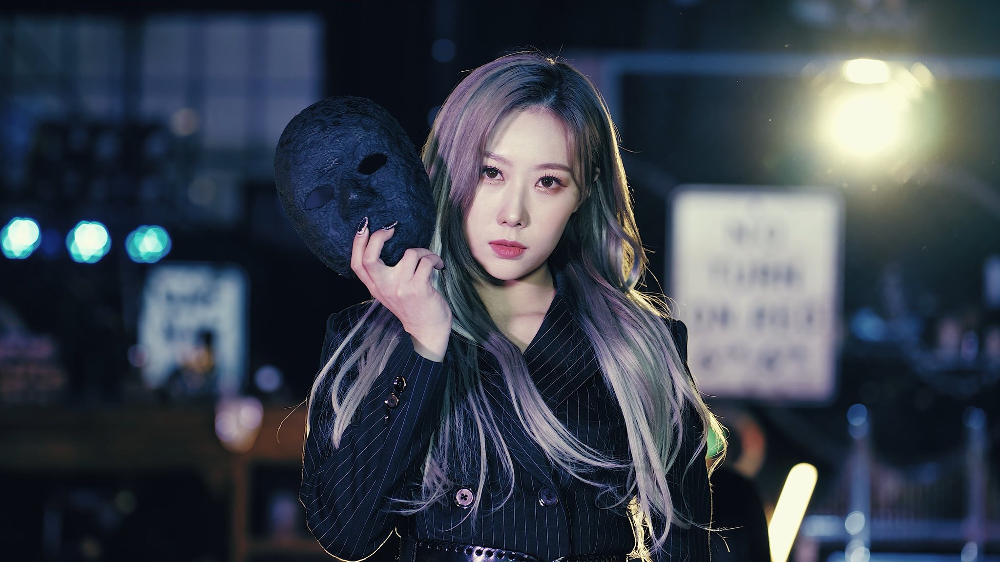
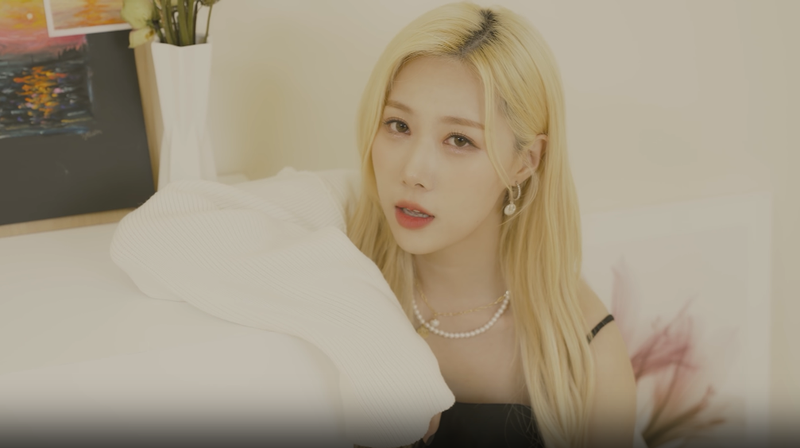
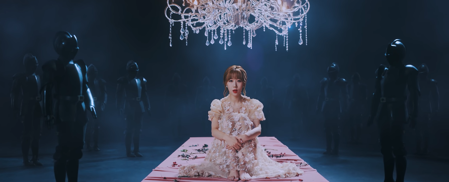

Note: all lyrics translations from 7 Dreamers; all images are screenshots from official Dreamcatcher videos or photos save from their social accounts.
Like a lot of newer Insomnias, my first encounter with Dreamcatcher was when I watched their MV for "Deja Vu". This would have been late summer 2020. I had shown some interest in learning more about kpop, and so my daughter made me a YouTube playlist.
As one would expect, one of the things that stood out for me was Handong's iconic lines "Oh now holding this pain / Every time I cast it away, the anguish".
Throughout the fall of 2020, Dreamcatcher became more and more of the focus of my time spent I listening to kpop, although it was pretty much exclusively on YouTube, and from the comments on those videos, I discovered that Handong had gone to China to appear on Youth With You 2 and then had got stuck there when the pandemic had broken out. I learned about the fear fans had that she wouldn't be coming back to the group. I learned that she hadn't done well on the show in terms of placement but that fans were proud of the growth that she had shown.
By the time I was reading these comments, she was probably already back in quarantine in South Korea. I hadn't joined kpop Twitter, didn't know about Weverse and Vlive. I was stuck several months behind because most of my information was coming from these old YouTube comments, but as Dreamcatcher became my favorite group, I explored more and more of their work and fanmade content about them, and talked to my daughter more about how kpop worked, and by the time the teasers to Road to Utopia dropped, I was a full-fledged fan and so was able to experience the joy of Handong's presence on "Odd Eye" and the rest of the album, her presence in comeback performances and on variety shows, the joy of the "Poison Love" self-made MV focusing on Handong, and all the way through to that moment during the Crossroads concert when her parents came over the sound system.
Yes, I teared up.
And, of course, Handong's triumphant return to Dreamcatcher continued on through her gorgeous cover of "下雨天", her iconic moments in Dreamcatcher Mind, the forceful barrel roll on their cover of "My House" for kcon, her amazing performances on Summer Holiday, etc.
I don't really define my fandom in terms of biases and wreckers (no shade to those who do). I enjoy and love each of the dreamies in my own way.
But because of how I came to become a fan of the group, I have a soft spot for Handong.
And really it all starts with hearing her sing "Oh now holding this pain".
What I've realized, though, is that it may have started there, but that wasn't the beginning or the end.
Handong has always been saying (singing) these phrases to us that sink in.

That Vocal Tone
Before I get to specifics, let's talk about that vocal tone.
All of the members of Dreamcatcher have unique, interesting, gorgeous vocal tones. It's a key part to why they're such an amazing group.
And all of them can sing delicate lines full of emotion.
But there's something about Dongie's vocal tone.
Part of it may be her vocal training in musicals and opera.
Part of it may be her personality and who she is as a musician and performer.
Part of it is certainly her unique physics and biology--that's how voices work.
Whatever combination of the above it is the result is captivating. There's just something about her voice, you know?
I don't want to turn this into an argument about line distribution. Yes, Dongie's lines tended to be meager on early title tracks. Yes, it's better now.
However, one of the things I was struck by when I finally listened to the group's entire discography in order from earliest to latest is that it's clear even from the beginning that the producers knew what Handong could bring to a song and gave her lines that required an extra emotional heft.

It Was Always There
I'm not going to quote every line she sings on every track. But think about what it means to have Handong in your head singing these lines to you. Think about what she's been telling fans over the years.
Note that I'm focusing on the lyrics that only she sings, although certainly there are lyrics where she sings a line and then another member sings it later (or earlier) in the track that also have an impact. I'm also including only the English translation. Obviously what we hear her sing for some of these is in Korean (or Japanese).
From "Emotion": Oh, I can’t hold you anymore / I told myself countless times
From "Lullaby": From this time without you / I want to leave
From "Full Moon": I want to get closer little by little
From "Mayday": I just run to you, run to you
From "Wonderland": A Mystery beyond escape / Strangely, I rely on your finger tips
From "July 7th": And I missed you so much / The look in your eyes that I stare at
From Deja Vu: Oh now holding this pain / Every time I cast it away, the anguish ... So now, I’m holding this pain / Like how you abandoned everything [Notice how the first time the focus is on the I and the second time on the You?]
From "Polaris": We resemble our sad selves / we live holding the same memories
From "First Light of Dawn": God knows how much I’ve been through / Without hesitation, I embrace solitude
From "Odd Eye": The lie that it’ll all be like that / Covered by the sweetness (woo ooo ooo)
From "Poison Love": But even if I hurt more because of you
From "Wind Blows": Blow, wind / so that I can reach you
From "A Heart of Sunflower": You’re slowly growing distant / I can feel it / Why aren’t you saying anything?
There are other lyrics I could quote here, especially from prechoruses or choruses where she sings them and then another member sings the same words later in the song, like in "4 Memory" where she sings "I want with you / I want with you now" and then Yoohyeon sings the same lines later.
What I experienced listening (and continuing to listen) to DC's entire discography is that Handong is often tasked with singing lines that are expressing pain or longing or a certain sensualilty or some combination of those. Certainly, that's due in part to the nature of the group's lyrics--it's not exclusive to her.
And yet, that thing--the thing you feel when she sings "Oh now holding this pain"--it's always been there. All the way back in "Emotion"; all the way to "A Heart of Sunflower"
Handong: that clear, delicate, mellow, silky, rich voice resonating in our heads, holding this pain, this emotion,